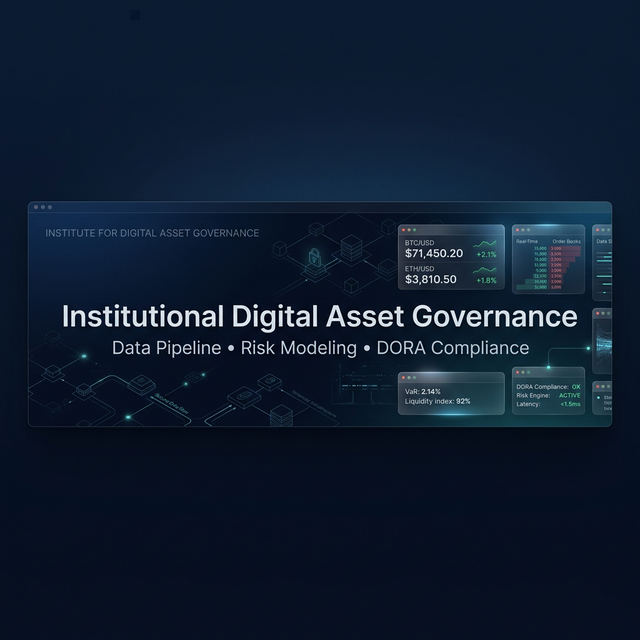

Préparez et publiez vos insights institutionnels en un clic.
LinkedIn Company Page setup
Copiez les éléments ci-dessous pour configurer votre page institutionnelle.
Slogan (Tagline)
Standardizing digital asset governance & DLT infrastructure for Tier-1 institutions.
Description (À propos)
DCM Core Institute is the European reference think-tank and infrastructure provider for Institutional Digital Asset Governance.
As global financial markets transition towards Programmable Capital Markets (PCM), Tier-1 banks face a critical challenge: integrating DLT, tokenization, and wCBDC while maintaining strict compliance with evolving regulations like DORA, MiCA, and Basel III.
We bridge the gap between regulatory theory and technical execution.
🔹 **OUR PILLARS:**
1. **Global Tokenized Securities Registry (GTSR):** A live data terminal tracking over $2.65B+ in verified institutional AUM.
2. **Reference Implementation Hub:** Actionable Blueprints and smart contract architectures for Digital Bonds and Institutional Money.
3. **Governance & Compliance:** Automated auditing tools and MRM (Model Risk Management) frameworks aligned with ESMA, EBA, and BIS standards.
4. **Policy & Research:** Providing global regulatory tracking, white papers, and the Global Tokenization Report 2026.
💡 **For CIOs, CROs, and Lead Architects:**
Stop wondering how to build compliant DLT infrastructure. Use our GTDS (Global Token Data Standard) and our programmable API to execute your digital asset strategy safely.
Explore our data, blueprints, and research at 🔗 dcmcore.com
Bouton CTA : Paramétrez le bouton sur "Learn more" pointant vers dcmcore.com.
Post Épinglé : Épinglez votre premier post sur le GTSR en haut du flux.
Bannière Mockup (Suggérée)

Utilisez cette image comme base pour votre couverture LinkedIn (1128x191 px).
LinkedIn Post Templates
Angle 1 : Data & Marché
**Le marché des actifs financiers tokenisés vient de franchir un cap. Et ce n'est plus au stade du "Proof of Concept".** 📊
Notre registre mondial (GTSR) au sein du DCM Core Institute suit désormais plus de 2,65 milliards de dollars d'AUM institutionnel vérifié.
Ce que nous observons en temps réel :
1️⃣ Les fonds monétaires (ex: BlackRock BUIDL) dominent la liquidité on-chain.
2️⃣ Les émissions de dette souveraine (EIB, KfW, SocGen) prouvent que le cycle de vie complet (émission, coupon, remboursement) peut être automatisé sans risque de contrepartie.
3️⃣ Le règlement atomique (DvP) en T+0 devient le nouveau standard exigé par les acheteurs institutionnels.
La question n'est plus "si" la tokenisation va transformer les marchés de capitaux, mais "à quelle vitesse" votre infrastructure pourra s'y connecter.
💡 Quants et Analystes : notre Observatoire est désormais interrogeable en temps réel via notre terminal web ou notre API (tapez `DCM.query()` dans votre console).
Explorez les données du Global Tokenized Securities Registry en direct ici :
🔗 https://dcmcore.com/fr/observatory/registre-titres-tokenises.html
#Tokenization #DigitalBonds #CapitalMarkets #DataAnalytics #DCMCore
Image suggérée : Capture d'écran du dashboard GTSR (AUM $2.65B+)
Angle 2 : Douleur Réglementaire
**70% des banques européennes n'ont pas de framework d'évaluation du risque DLT conforme à DORA.** ⚠️
Alors que l'écosystème migre vers les "Programmable Capital Markets", le risque se déplace du risque de crédit vers le risque technologique (Smart Contracts, Oracles, DLT).
Si votre banque prépare une émission obligataire sur registre distribué en 2026, votre Board vous posera ces questions :
🔒 Comment modélisons-nous le "Bug Risk" d'un Smart Bond Contract ?
⚖️ Notre Tokenized Deposit est-il en conformité avec MiCA et Bâle III ?
🛡️ Comment garantir l'immuabilité et la résilience opérationnelle (DORA) ?
Chez DCM Core Institute, nous avons standardisé la gouvernance des actifs numériques pour les institutions Tier-1.
🛠️ **Nouveau :** Nous venons de mettre en ligne notre Auditeur de Conformité Interactif. Testez l'alignement de vos projets DLT avec les standards institutionnels (GTDS) en 2 minutes.
Évaluez votre infrastructure ici :
🔗 https://dcmcore.com/fr/standards/blueprints/index.html
#Compliance #DORA #MiCA #RiskManagement #Banking #FinTech
**Un standard n'est qu'une théorie tant qu'il n'y a pas de code pour l'exécuter.** 🏗️
Jusqu'à présent, les pilotes DLT se sont concentrés sur des parties isolées de la chaîne de valeur, conduisant à un paysage fragmenté.
C'est pourquoi le DCM Core Institute lance aujourd'hui son **Reference Implementation Hub**. Nous passons de l'Observatoire à l'Architecte d'Infrastructure.
Ne vous demandez plus comment construire une obligation numérique (Digital Bond). Nous avons documenté l'architecture de référence :
📝 Mapping GTDS (Global Token Data Standard) exhaustif.
⚙️ Logique de cycle de vie des Smart Contracts intégrée.
🔄 Schéma exécutif de l'émission on-chain au règlement DvP.
Que vous travailliez sur des actifs réels (RWA) ou de la monnaie institutionnelle (wCBDC / Tokenized Deposits), nos Blueprints traduisent la réglementation en spécifications techniques.
Accédez à notre galerie de Blueprints et accélérez votre "Time-to-Market" :
🔗 https://dcmcore.com/fr/standards/blueprints/index.html
#Web3 #EnterpriseBlockchain #SmartContracts #DigitalAssets #ITArchitecture
Image suggérée : Schéma d'architecture Digital Bond
Angle 4 : Thought Leadership
**Qu'avons-nous appris de plus de 60 émissions pilotes d'obligations tokenisées à travers le monde ?** 🌍
De la BCE au projet mBridge (BRI), en passant par Evergreen (HKMA), les institutions financières de Tier-1 ont posé les fondations du futur des marchés primaires.
Au DCM Core Institute, nous avons synthétisé ces retours d'expérience en 8 enseignements opérationnels critiques :
📉 La simplification de la chaîne de valeur (de 6 intermédiaires à 2) est bien réelle.
💶 Le règlement en monnaie de banque centrale (wCBDC) ou dépôts tokenisés est non-négociable pour le T+0.
🧩 L'interopérabilité des réseaux DLT reste le chantier numéro 1.
Vous préparez votre stratégie 2026 ? Plongez dans nos Policy Briefs et nos rapports de recherche pour comprendre comment les marchés de capitaux deviennent programmables.
📖 Lisez l'analyse complète "DLT Bonds Learnings" sur notre portail de recherche :
🔗 https://dcmcore.com/fr/policy/dlt-bonds-learnings.html
#InstitutionalFinance #DLT #wCBDC #InnovationBanking #DCMCore